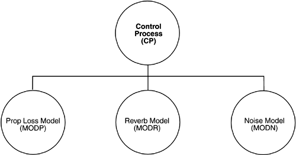

| [ Team LiB ] |
|
2.1 What Software Architecture Is and What It Isn'tFigure 2.1, taken from a system description for an underwater acoustic simulation, purports to describe that system's "top-level architecture" and is precisely the kind of diagram most often displayed to help explain an architecture. Exactly what can we tell from it? Figure 2.1. Typical, but uninformative, presentation of a software architecture
Is this an architecture? Assuming (as many definitions do) that architecture is a set of components (of which we have four) and connections among them (also present), this diagram seems to fill the bill. However, even if we accept the most primitive definition, what can we not tell from the diagram?
We must raise these questions because unless we know precisely what the elements are and how they cooperate to accomplish the purpose of the system, diagrams such as these are not much help and should be regarded skeptically. This diagram does not show a software architecture, at least not in any useful way. The most charitable thing we can say about such diagrams is that they represent a start. We now define what does constitute a software architecture:
"Externally visible" properties are those assumptions other elements can make of an element, such as its provided services, performance characteristics, fault handling, shared resource usage, and so on. Let's look at some of the implications of this definition in more detail. First, architecture defines software elements. The architecture embodies information about how the elements relate to each other. This means that it specifically omits certain information about elements that does not pertain to their interaction. Thus, an architecture is foremost an abstraction of a system that suppresses details of elements that do not affect how they use, are used by, relate to, or interact with other elements. In nearly all modern systems, elements interact with each other by means of interfaces that partition details about an element into public and private parts. Architecture is concerned with the public side of this division; private details—those having to do solely with internal implementation—are not architectural. Second, the definition makes clear that systems can and do comprise more than one structure and that no one structure can irrefutably claim to be the architecture. For example, all nontrivial projects are partitioned into implementation units; these units are given specific responsibilities and are frequently the basis of work assignments for programming teams. This type of element comprises programs and data that software in other implementation units can call or access, and programs and data that are private. In large projects, these elements are almost certainly subdivided for assignment to subteams. This is one kind of structure often used to describe a system. It is very static in that it focuses on the way the system's functionality is divided up and assigned to implementation teams. Other structures are much more focused on the way the elements interact with each other at runtime to carry out the system's function. Suppose the system is to be built as a set of parallel processes. The processes that will exist at runtime, the programs in the various implementation units described previously that are strung together sequentially to form each process, and the synchronization relations among the processes form another kind of structure often used to describe a system. Are any of these structures alone the architecture? No, although they all convey architectural information. The architecture consists of these structures as well as many others. This example shows that since architecture can comprise more than one kind of structure, there is more than one kind of element (e.g., implementation unit and processes), more than one kind of interaction among elements (e.g., subdivision and synchronization), and even more than one context (e.g., development time versus runtime). By intention, the definition does not specify what the architectural elements and relationships are. Is a software element an object? A process? A library? A database? A commercial product? It can be any of these things and more. Third, the definition implies that every computing system with software has a software architecture because every system can be shown to comprise elements and the relations among them. In the most trivial case, a system is itself a single element—uninteresting and probably nonuseful but an architecture nevertheless. Even though every system has an architecture, it does not necessarily follow that the architecture is known to anyone. Perhaps all of the people who designed the system are long gone, the documentation has vanished (or was never produced), the source code has been lost (or was never delivered), and all we have is the executing binary code. This reveals the difference between the architecture of a system and the representation of that architecture. Unfortunately, an architecture can exist independently of its description or specification, which raises the importance of architecture documentation (described in Chapter 9) and architecture reconstruction (discussed in Chapter 10). Fourth, the behavior of each element is part of the architecture insofar as that behavior can be observed or discerned from the point of view of another element. Such behavior is what allows elements to interact with each other, which is clearly part of the architecture. This is another reason that the box-and-line drawings that are passed off as architectures are not architectures at all. They are simply box-and-line drawings—or, to be more charitable, they serve as cues to provide more information that explains what the elements shown actually do. When looking at the names of the boxes (database, graphical user interface, executive, etc.), a reader may well imagine the functionality and behavior of the corresponding elements. This mental image approaches an architecture, but it springs from the observer's mind and relies on information that is not present. We do not mean that the exact behavior and performance of every element must be documented in all circumstances; however, to the extent that an element's behavior influences how another element must be written to interact with it or influences the acceptability of the system as a whole, this behavior is part of the software architecture. Finally, the definition is indifferent as to whether the architecture for a system is a good one or a bad one, meaning that it will allow or prevent the system from meeting its behavioral, performance, and life-cycle requirements. We do not accept trial and error as the best way to choose an architecture for a system—that is, picking an architecture at random, building the system from it, and hoping for the best—so this raises the importance of architecture evaluation (Chapters 11 and 12) and architecture design (Chapter 7). |
| [ Team LiB ] |
|